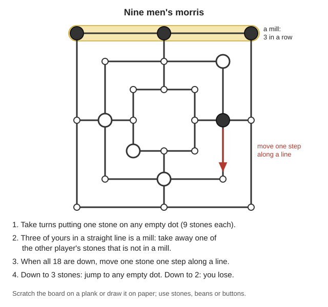
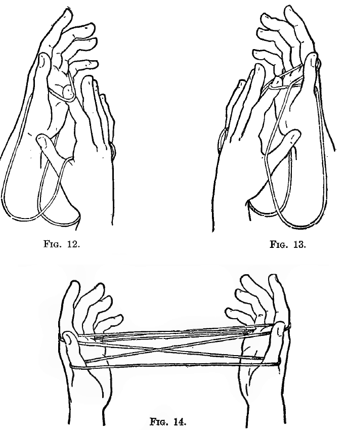
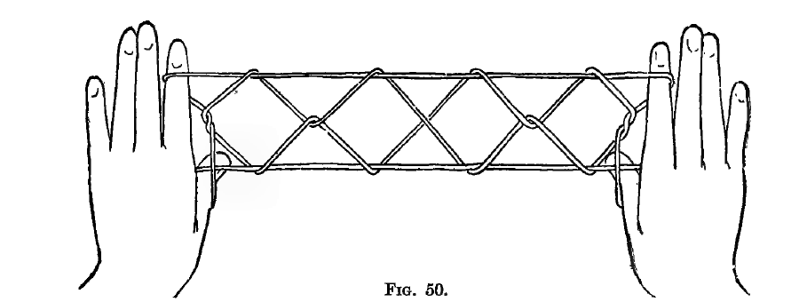

How to keep spirits up and children learning when the power is gone and the winter evenings are long: why stories, play and a steady routine matter so much in hard times, how to open the library's books and e-books, what to read aloud at each age, teaching reading and numbers at the kitchen table, telling stories with no book, games that need no power (cards, board games you can scratch on a plank, group and outdoor games, string figures, pencil-and-paper and word games), toys to make, songs, home-made books and plays, safe light to read by, and a simple evening routine. The activity books are in Stories\Games-and-Things-to-Make; the classic stories are in Stories\Picture-Books-and-Rhymes, Stories\Read-Aloud-and-Early-Readers, Stories\Ages-9-to-13 and Stories\Teens-and-Adults; the McGuffey readers and Ray's arithmetic are in Children-Learning; the books on stress and children are in Community-Barter\Wellbeing (all under Southern-Oregon\; the download list is local/library-files.txt). Page numbers are the PDF page numbers, so they match the links.
The short version
Give every day the same shape: meals, chores, play, a story, bed at the same time. "Children feel safest when there is order and predictability" (SPR, p. 101; FEMA, p. 189).
Read aloud every evening, teens included. A flame "smaller than that of a birthday candle" is enough to read by with foil behind it (Kearny, p. 104).
Play is how children tell you what scared them. Disaster or violent play is normal; name the feelings with them. The same upsetting scene over and over means they need more help (PFA, p. 140).
Fun needs almost nothing: one deck of cards, a 6-ft string tied into a loop (Jayne, p. 36), stones on a board scratched into a plank, beans, corn husks, a handkerchief.
Plan one thing to do alone and one with others each day, and don't let anyone sit alone doing nothing for long (SPR, pp. 99, 101). Grown-ups too.
Older children can teach and mind younger ones, but not near water: many child drownings happen "in the company of other children" (WHO, p. 90).
Skip the old books' fire balloons, fireworks, gunpowder, melted lead, arsenic and acids. See "Old advice in the library to ignore".
🧠 Why stories, play and routine matter
Children copy the grown-ups. They "look to adults for cues about safety" (PFA, p. 35), and their reactions "are influenced by the behavior, thoughts, and feelings of adults" (FEMA, p. 189). A calm evening of cards and a story tells them more than any speech.
Routine gives back a sense of control. Disasters "disrupt normal routines and activities that provide a sense of purpose, control, and pleasure"; planning pleasant activities helps mood and control come back (SPR, p. 31). FEMA's list: hug and touch your children, spend extra time with them "such as at bedtime", "re-establish your daily routine for work, school, play, meals, and rest", and give them real chores so they feel they are helping (FEMA, p. 189).
What helps, according to the disaster workers' handbook: toys, playing cards, board games, balls, paper, crayons and books; building blocks, play dough, cut-outs and team games are calming; older children reading to younger ones; and for teens, music, games, "making up and telling stories, or making a scrapbook" (PFA, p. 36). For children it also recommends "reading out loud, doing a joint art activity, and playing cards, board games, or sports" (p. 35).
Singing pulls a group together. "A short time devoted to singing will do more to unify the people and bring them into a neighborly and co-operative spirit than anything else possible" (Golden Book, p. 122).
Join in. "Nothing can more quickly gain the respect and affection of a child" than a grown-up who plays (Bancroft, p. 40).
Babies and toddlers learn by play and talk. From age 2: "Teach your child stories, songs and games. Talk about pictures or books" (WHO/UNICEF cards, p. 2). With no toys: "Use any household objects that are clean and safe. Make simple toys. Play with the child" (p. 3). The age-by-age table is in "Keeping children learning at home" in the Childbirth & Children guide.
Grown-ups need it too. The SPR worksheet: pick two or three activities, at least one alone and one with someone else, and write them on a calendar (SPR, p. 98).
📱 Opening the books on the library computer or a phone
Find them: in the library, open the 📚 Books tab and then 📖 Stories & fun. The activity books in this guide and the classic e-books are there; the search box at the top finds a title fast. The McGuffey readers and Ray's arithmetic are on the 🩹 Health & medicine shelf under "Children Learning".
E-books open as web pages on the library computer and on any phone or tablet connected to it, with no reader app: a contents page with Start reading, then one part at a time with ‹ Prev / Next ›, Contents to jump around, and A− / A+ for smaller or bigger text.
It remembers where you stopped. The contents page shows Continue where you left off. The place is kept in each phone's own browser, so one child's reading doesn't move another's bookmark.
For an e-book app, tap save the e-book file at the bottom of the contents page.
PDF books (the activity books, McGuffey, Ray's) open in the browser's PDF viewer. The page numbers in this guide are the viewer's page numbers, not the number printed on the old page.
Save power: one screen, turned dim, read aloud to everyone uses far less battery than a screen each (rule of thumb); charging is in the Off-Grid Power guide. Setting up the library on a phone or another device: Use on a phone and Start on any device.
📚 Reading aloud by age
How to read aloud(rule of thumb unless cited):
Same time and place every evening, one lamp, everyone close. Little ones on a lap or beside you.
Read a little slower than you talk, and do the voices. Stop at an exciting moment so they beg for tomorrow.
Let them hear favorites again. Children love "some degree of repetition", along with "action, in close sequence" and familiar things "tinged with mystery" (Bryant, p. 76).
Ask "what do you think happens next?" and let a child who can read take a page or a part.
Don't stop reading aloud when they can read alone: a chapter a night of a long book holds a family together, and teens will listen to books that are too hard for them to read yet.
Old books, old attitudes. About 50 of the classics are marked "Some words and attitudes are of its time" in their library description. That is a good thing to talk about while reading aloud: how people saw things then, and why we see them differently now. With little ones, change a word or skip a page.
The library has 265 classics, all free public-domain e-books in the Stories\ folders (📚 Books → 📖 Stories & fun). Each age band below picks a dozen or so to start with; the library description of every book gives its age range and says whether it has pictures.
Ages 2–6: picture books and rhymes
The Tale of Peter Rabbit — Peter squeezes under the gate into Mr. McGregor's garden. Start here: there are 20 Beatrix Potter picture books, among them Jemima Puddle-Duck and the charming fox.
The Real Mother Goose — hundreds of nursery rhymes with color pictures; learn a few by heart.
A Apple Pie — Kate Greenaway's alphabet, A to Z: a first letter book.
The rest are in Stories\Teens-and-Adults (101 in all).
Survival stories for older children and adults
People in hard times have always liked stories of others who made it through (rule of thumb). Read these for courage and ideas, not as instructions: check anything practical against the guides.
Robinson Crusoe — alone on an island for 28 years, he builds, farms and survives (of its time).
Start with the Primer: "Only about six new words are to be mastered in each lesson", and you can teach by sounds (phonics), by whole words, by the alphabet, or a mix. The script lessons and "slate exercises" at the back teach writing too (p. 7).
Then the First Reader. Phonics way: teach the sounds of the letters in the lesson, then put them together into words; words way: learn the words at the top of the lesson by sight and read without stopping; best is both, words first, then sounds and spelling. Teach writing letters along with their names (p. 6).
Second and Third Readers for children reading on their own; the Third has a lesson on reading with expression to practise aloud (Third Reader, p. 14).
Numbers with Ray's:
Count real things first. "Movable objects are better for exercises in counting than pictures": marbles, beans, kernels of corn, or pebbles (Ray's Primary, p. 11).
Then the sums to 20, written out on a slate so they don't count on their fingers. "Teach one thing at a time, and teach it thoroughly" (same page). Lesson 1: point to each ball and count, then write the figure (p. 12).
Mental arithmetic in Ray's Intellectual needs no paper and teaches a child "to reason, to analyze, to think for himself" (p. 9). Written arithmetic goes on in Ray's Practical; worked answers for parents are in the Key.
Older children teach younger ones. Structured tutoring works better than now-and-then help; short runs (up to about four weeks) on basic skills give the best results, math most of all, then reading (Peer Tutoring, p. 18). A child a few years older often sees what a learner doesn't understand better than an adult does (p. 19). But untrained tutors "may resort to threats of punishment and scornful put-downs": show them how to be kind first (p. 21).
Games that teach(each from the books below): Buzz for the 7-times table, Take Fourteen for adding, cribbage for counting by fifteens, Beast, Bird or Fish for quick naming. Keep lessons short, 15–20 minutes for young children, and stop while it is still going well (rule of thumb). Slates, chalk and home-made pencils: "Pencils, charcoal, chalk and slates" in the Paper & Ink guide.
🗣️ Telling stories with no book
From Sara Cone Bryant's How to Tell Stories to Children (1905):
Pick a story with action, a little mystery and some repetition, like The Three Bears or The Three Little Pigs (p. 76).
"Know your story." Don't learn it word for word: memorizing "utterly destroys the freedom" of telling. Tell it over and over out loud to an imaginary listener until it flows, keeping only the best phrases of the original (pp. 118–121).
Seat little children close, in a half-circle, with you opposite the middle and no child behind another: "Little children have to be physically close in order to be mentally close" (p. 122).
Be natural. No sugary voice (p. 125); "short, familiar, vivid words"; keep the story moving and end it "with a snap" (p. 127). There's "no need to speak loudly" (p. 136).
Tired of the story? "Make believe" you enjoy it; the real interest usually comes back (p. 133).
Afterwards let them retell it, draw it, or play it: "Who would like to be Red Ridinghood?" (p. 144).
The book's second half is stories ready to tell, sorted by age: for the youngest The Cooky, The Pied Piper, The Star Dollars; for 7–8 The Cat and the Parrot, The Fire-Bringer, Little Daylight; for 9–10 Arthur and the Sword, Why the Sea is Salt, The Little Hero of Haarlem (contents, pp. 16–17).
Your own stories count most. Tell how grandparents lived, how the family came to the valley, what you did as a child; let children make up endings and tell the next part (rule of thumb). A child who can't talk about what happened may "draw a picture or tell a story of what happened" (FEMA, p. 189).
🃏 Card games and board games
One deck of 52 cards is a whole winter of evenings. Rules are in Foster's Complete Hoyle (1914). Play for beans or matchsticks, never for food, tools or trade goods: losses of real things start real fights (rule of thumb).
Game
Players
Good for
Where
Old Maid
Any number
Little ones: take out one queen, pair up cards, draw from your neighbor; whoever is left with the odd queen is the Old Maid
Boards you can make from a plank, a cardboard box lid or the dirt (rule of thumb):
Checkers: 64 squares, 12 men each on the dark squares, a light square at each player's right (p. 609). Chess is on p. 577.
Nine men's morris: 9 stones each on a board of three squares; three in a line lets you take one of the other player's stones; down to two stones and you lose (pp. 636–637).
Go-Bang (Gomoku): take turns placing stones; first to get five in a row in any direction wins (p. 636). It works on squared paper.
Dominoes: the standard double-six set has 28 pieces (p. 637); cut them from thin wood and burn or paint the spots (rule of thumb).

Stones go on the 24 dots; three in a line is a mill (Hoyle, pp. 636–637; a diagram drawn for this guide).
🏃 Group and outdoor games
Pick games for the age (Bancroft, pp. 27–28): about 6 years, games with lots of repetition, pretending to be animals or farmers, and one chaser after one runner; two or three years later, catching a whole group, daring, choosing sides; from 11–12, harder races and team play.
Explain the whole game before anyone plays; walk a few players through it slowly. "Never try to teach and play a game at the same time."
Too many players means bored players: split into smaller groups, and make the rowdiest older children the group leaders. Let the players vote on the game.
Have a new game ready when interest fades, but "children like quiet" too: don't keep them at games all day.
Singing games for the little ones:Farmer in the Dell (p. 309), London Bridge (p. 324), Looby Loo (p. 326), Mulberry Bush (p. 329), Oats, Peas, Beans (p. 333).
Bean bags suit little children and indoor games, where a dropped ball rolls away: heavy closely woven cloth (ticking, duck, denim) 6–12 inches square, stitched twice and filled with dried beans or peas; a square of cloth with dried leaves tied up in it will do (Bancroft, pp. 345–346).
Outdoors safely(rule of thumb): in Duck on a Rock nobody throws until everyone is behind the line; play in sight of the house and in groups; everyone in by dusk, when cougars and bears move; no child under 5 near the river, a pond or a tank unless an adult is right there (WHO, p. 90).
🧶 String figures: cat's cradle and more
The string: about 6 ft long, ends tied to make a loop about 3 ft long. A woven cord kinks less than a twisted one; tie the ends in a small square knot (Jayne, p. 36). Most figures start with the hands in the "usual position": palms facing each other, fingers pointing up (same page).
Put both little fingers in the loop and pull the hands apart.
Turn the palms away from you, put each thumb into the little-finger loop from below, pick up the near string on the back of the thumb, turn the palms to face each other again and pull tight.
Opening A, which starts more than half of all string figures (pp. 43–44):
First Position.
Put the right index finger up under the string that crosses the left palm, and pull the hands apart (Fig. 12).
Put the left index finger up under the string crossing the right palm, between the strings on the right index, and pull apart (Fig. 13). Now there is a loop on each thumb, index and little finger (Fig. 14). Always right first, then left (p. 44).

Opening A: right index first (Fig. 12), then left (Fig. 13), and the finished opening (Fig. 14) (Jayne, pp. 43–44).
Osage Diamonds, also called Jacob's Ladder (pp. 60, 63–65):
Opening A.
Drop the thumb loops and pull the hands apart.
Each thumb goes away from you under all the strings and picks up the far little-finger string from below.
Each thumb goes away from you over the near index string and picks up the far index string from below.
Drop the little-finger loops and pull apart.
Each little finger goes toward you over the near index string and picks up the far thumb string from below.
Drop the thumb loops.
Each thumb goes away from you over the index loop and picks up the near little-finger string from below.
With the other hand, lift the near index string of each hand and put it over that thumb. Pull apart.
Slip the lower loop on each thumb off over the upper one, keeping the upper loop on.
Put each index finger down into the little triangle by the thumb, turn the palms down, drop the little-finger loops, pull apart and turn the palms away from you: the diamonds appear (Fig. 50).

The finished figure; turn the palms away from you to pull it tight (Jayne, p. 65).
Two-player cat's cradle: two people take the string off each other's hands in turn, through eight named figures: Cradle, Soldier's Bed, Candles, Manger, Diamonds, Cat's Eye, Fish in a Dish, Clock (p. 386). The book has 97 figures in all (p. 36), from fish spears to an Apache door: a teen can work through them all winter.
✏️ Pencil, paper and word games
All from Bancroft unless noted; most need only voices.
Buzz: count around the circle, but say "Buzz" for 7, any multiple of 7, and any number with a 7 in it; a mistake starts it again at one (p. 254).
Beast, Bird or Fish: throw a knotted handkerchief at someone, call "Bird!" and count to ten; they must name a bird not named before (p. 253).
What Is My Thought Like? One person thinks of a thing, everyone guesses what it is "like", then each must say why the thought is like their answer, however silly (p. 280).
Crambo: everyone writes a question on one slip and a noun on another; mix them, draw one of each, and write a verse that answers the question and uses the word (p. 256).
Naughts and Crosses (tic-tac-toe) on a slate, paper or the ground (p. 269).
What Will You Take to the Picnic? Only the host knows the secret rule (the food must start with the guest's initial); the others must work it out (Girls' Handy Book, p. 178).
Shadow Verbs: act out a verb as a shadow on a sheet lit from behind, and the others guess it (Girls' Handy Book, p. 180). Keep the lamp on a steady base well away from the sheet (rule of thumb).
Twenty questions, I spy, word chains, riddles and spelling bees need no book at all (rule of thumb).
Use the soft inner husks, about two per doll; soak brittle ones in water.
Lay one husk partly over the other, fold across the middle, fold the sides to the back, and wind soft string round for the neck and head (Fig. 186), then lower down for the waist (Fig. 187).
For arms, roll a husk lengthwise, trim the ends, and tie it at the middle and near each end (Fig. 188).
An adult pushes a small knife blade through the shoulders; slide the arms in along the flat of the blade.
For a boy doll, split the skirt and tie each half into a leg (Fig. 189).
A string telephone: two tins with the bottoms off, wet strong paper tied over one end of each and dried tight as a drum, and a waxed string knotted through the middle of each paper (Girls' Handy Book, p. 246).
Music from the field: a blade of grass stretched between the thumbs (Boys', p. 185), a corn-stalk fiddle (p. 186), a pumpkin-vine fife (p. 187).
Kites: a frame of light sticks, tissue paper stuck on with flour-and-water paste boiled thick like starch (Boys', p. 27), a breast-band (bridle) of two strings crossing, and a tail (pp. 28–29); the Japanese square kite is bent back a little and flies two tails (p. 41). Fly them in open fields, never near power lines: lines can come live again without warning (rule of thumb).
Bean bags, rag balls and dolls from scraps; see "Group and outdoor games" above.
Safety and thrift(rule of thumb unless cited): an adult does the knife work for young children. Foxglove is poisonous fresh, dried or boiled (WSU, p. 28), so skip the Toy-Shop's foxglove toys (p. 97) with toddlers, and wash hands after any plant craft. The book also makes toys from lima beans, peas, radishes, apples and oranges: when food is short, use husks, shells, burrs, seed pods and leaves instead.
🎵 Songs
The Golden Book of Favorite Songs has 202 songs, 192 of them with the music (p. 1). You don't need to read music: one person who knows the tune leads, and the rest follow. A song leader "need not be a great musician but must possess qualities of leadership and a strong sense of rhythm" (p. 122).
Rounds (one group starts, the next joins a line later): Row, Row, Row Your Boat (p. 50), Three Blind Mice (p. 115), Are You Sleeping? (p. 117), Little Tom Tinker (p. 120), Merrily, Merrily (p. 121).
For small children:Twinkle, Little Star (p. 80), The Farmer in the Dell (p. 88), Old MacDonald, going on "indefinitely" with more animals (p. 122), The Tree in the Wood, which adds a line each verse (p. 123), Alouette (p. 124).
Lullabies:Sweet and Low (p. 42), Brahms' Cradle Song (p. 77), I Will Sing a Lullaby (p. 81). Even feeding time is a time to "look at the child, and talk or sing to the child" (WHO/UNICEF cards, p. 3).
Old favorites for everyone:Home, Sweet Home (p. 24), Hard Times Come Again No More (p. 28), Loch Lomond (p. 36), Auld Lang Syne (p. 37), Jingle Bells (p. 116), My Bonnie (p. 117).
A "vocal combat": two groups sing The Spanish Cavalier and Solomon Levi at the same time (p. 119).
A few 1800s minstrel songs in the book (such as Massa's in the Cold Ground, p. 30) are written in the mocking dialect of their day; most families will skip them (rule of thumb).
Work songs, hymns your family knows and songs you make up about the chores count just as much. Singing while working makes the work go faster (rule of thumb).
🎭 Making your own books, plays and newspapers
Books: paper, ink, pens, slates and keeping books dry are in the Paper & Ink guide. For little hands, a cloth book of strong linen or colored cambric lasts (Girls' Handy Book, p. 417); for any home-made book, two pieces of heavy cardboard with three holes near the edge, laced or tied through matching holes in the pages (p. 423).
Children's own books: each child writes and draws a story, a record of the year, the family tree, or a guide to the plants and birds around the house; read them aloud on a show night (rule of thumb).
Play the story: after a story is told, hand out the parts and act it; in a little company "it is an all-star cast, and no one realizes any indignity in a subordinate role" (Bryant, p. 144).
A puppet theater: an old picture frame about 2 ft by 18 in with white muslin tacked on the back makes the stage (Boys' Handy Book, p. 347), and the book has a whole puppet play of Puss in Boots (p. 358). Put the light on a steady base, well back from the cloth (rule of thumb).
A family "paper" or club: the Literary Sketch Club picks a subject; members bring a song, a sketch, a poem or an essay about it, and an editor puts out a paper (Boys' Handy Book, pp. 334–335). A hand-written neighborhood news sheet also carries real news (rule of thumb); see the Community & Barter guide.
🕯️ Light for reading, and fire safety around children
One small light, everyone close: with aluminum foil on three sides and the bottom of a small lamp, hung between you and the book, a flame "smaller than that of a birthday candle" is enough to read by, and shelter families "will appreciate having someone read aloud to them" (Kearny, p. 104). Do crafts and lessons by daylight near a window and save lamp fuel for story time (rule of thumb).
Where the lamp sits: a safe lamp is short and heavy with flat sides so it won't roll; never at the edge of a table; don't hang lamps on walls; never add fuel to a burning lamp (WHO, p. 106). "Keep lamps and matches out of reach of children" (Where There Is No Doctor, p. 22).
Before sleep, every flame out. Carbon monoxide has no color or smell; "unconsciousness and death can occur without warning" (FM 21-76, p. 182).
No flame inside paper or cloth: no candles in paper lanterns, tents, puppet screens or blanket forts (rule of thumb). No outdoor fires for fun in fire season, June to October; see the Wildfire guide.
A small burn: clean cool water (not ice) right away, for no longer than 20 minutes; "Never put ice, grease, fat" on a burn (Where There Is No Doctor, p. 22). Bigger burns: the Field Care guide.
Making candles and lamps, getting more light from a little flame, and kerosene and children: the Lighting guide, especially "Getting more light from a little flame" and "Fire, fumes, burns and children".
🌙 A simple evening routine
A plan that works in most homes (rule of thumb, built on FEMA, p. 189 and SPR, p. 101: routine, meals together, time at bedtime). Move it earlier in winter, when it is dark by 5.
Before dark: evening chores done together: water, wood, animals shut in, lamps filled by an adult.
Supper together, at the table, same time each day. Each person tells one good thing from the day.
Game time, 30–45 minutes: cards, a board game, string figures, or a quiet game everyone can play.
A song or two, a round if there are enough voices.
Story time: a chapter read aloud by the one lamp, or a told story for the little ones.
Bed: a few minutes with each child; this is when worries come out. Then every flame out.
Once a week, a show night: a puppet show, a play, poems recited from McGuffey, a reading from someone's own book, a song from each person. In summer, play outside until dusk and save lamp fuel (rule of thumb).
🆘 If this goes wrong
Problem
What to do
A small child keeps playing out the disaster, or plays violently
It can be "their way of telling us how crazy things were". Name the feelings, hold them, stay close. If they play the same upsetting scene over and over, or space out, calm them, help them feel safe, and get help (PFA, p. 140)
A child has gone back to wetting the bed or baby talk
Common after a fright. Don't criticize or force; as the child feels safer the skill comes back (PFA, p. 140)
A child is "hyper" and can't sit still for a story
Burn off the energy first: stretching, running, slow deep breathing; then sit and do something together, like throwing a ball or drawing (PFA, p. 140)
A child or teen withdraws, won't play, sleeps all day
Keep the routines and meals together; don't let them spend long hours alone or doing nothing; get them outdoors, even a walk with a brother or sister (SPR, p. 101)
Games end in fights
Settle the rules before you start (rule of thumb); let the players vote on the game, and give the rowdiest older child the job of leading the little ones (Bancroft, p. 42)
The grown-ups are too worn out to play
Find one person to talk to about how you feel, and ask others to help with the child or the chores (WHO/UNICEF cards, p. 3); trade evenings with a neighbor family (rule of thumb)
Things get worse instead of better over weeks
Talk to a doctor, someone who knows children, or clergy (FEMA, p. 189); see "Grief, stress and psychological first aid" in the Community & Barter guide
The library computer or phone is dead
Tell stories, sing, play cards and string figures: none of it needs power. Keep a few paper books and a printed copy of this guide (rule of thumb)
⚠️ Old advice in the library to ignore
The old activity books are full of good ideas, and a few that hurt children or start fires.
Book says
Do this instead
Paper hot-air balloons lifted by a ball of lamp wick soaked in alcohol and lit, sent up to sail "out of sight" (Boys' Handy Book, p. 165), carrying fire-crackers (p. 167) and powder from a Roman candle (p. 170)
Never. A burning balloon comes down where the wind takes it; in our dry summers that is a wildfire. Fly kites by day
A paper lantern on a kite's tail, "the Moving Star", which "the motion of the kite is apt to set fire to" (Boys', p. 41)
No flame on a kite, ever
Candles inside paper lanterns hung on wires and trees, and in cloth or paper "illuminated tents" (Girls' Handy Book, p. 133)
No flame in paper or cloth. Outdoors, no flames at all June–October (rule of thumb)
"Small flashes of gunpowder" for lightning in the puppet show (Boys', p. 357)
No powder. Shake a sheet of tin for thunder (rule of thumb)
"War kites" with broken bottle glass tied on the tail to cut other kites' strings (Boys', pp. 45–46)
Skip it: glass cuts hands and falls on people
Melted lead poured into an eggshell for a roly-poly toy (Girls' Handy Book, p. 67) and into water to tell fortunes at Halloween (p. 212)
Lead poisons children, and hot metal burns. Weight the toy with a pebble set in clay (rule of thumb)
Litharge (a lead oxide) in aquarium cement (Boys', p. 82)